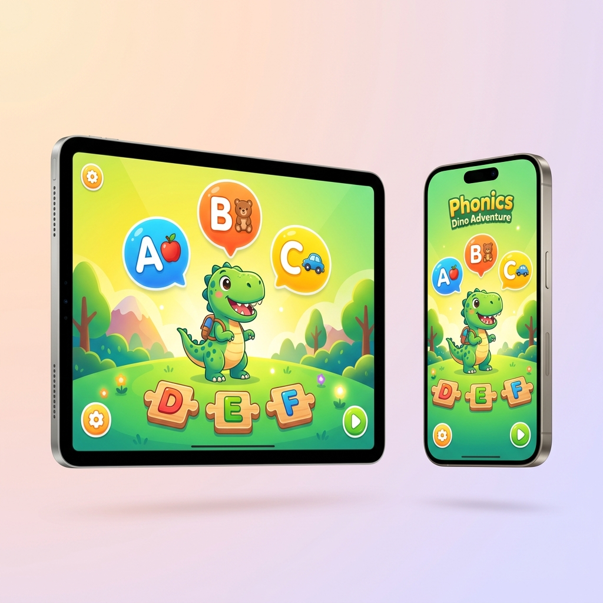
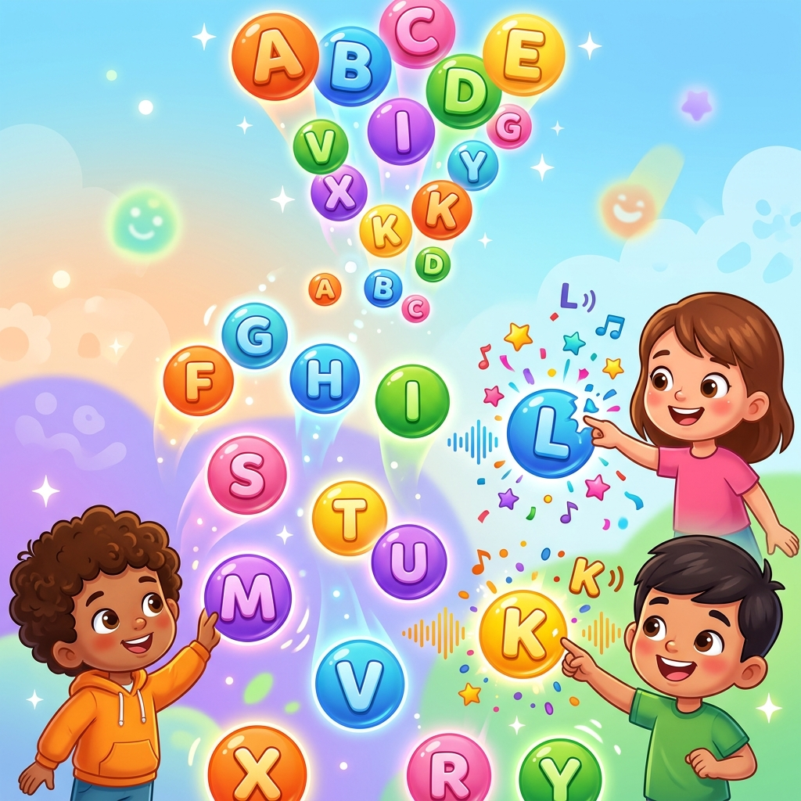
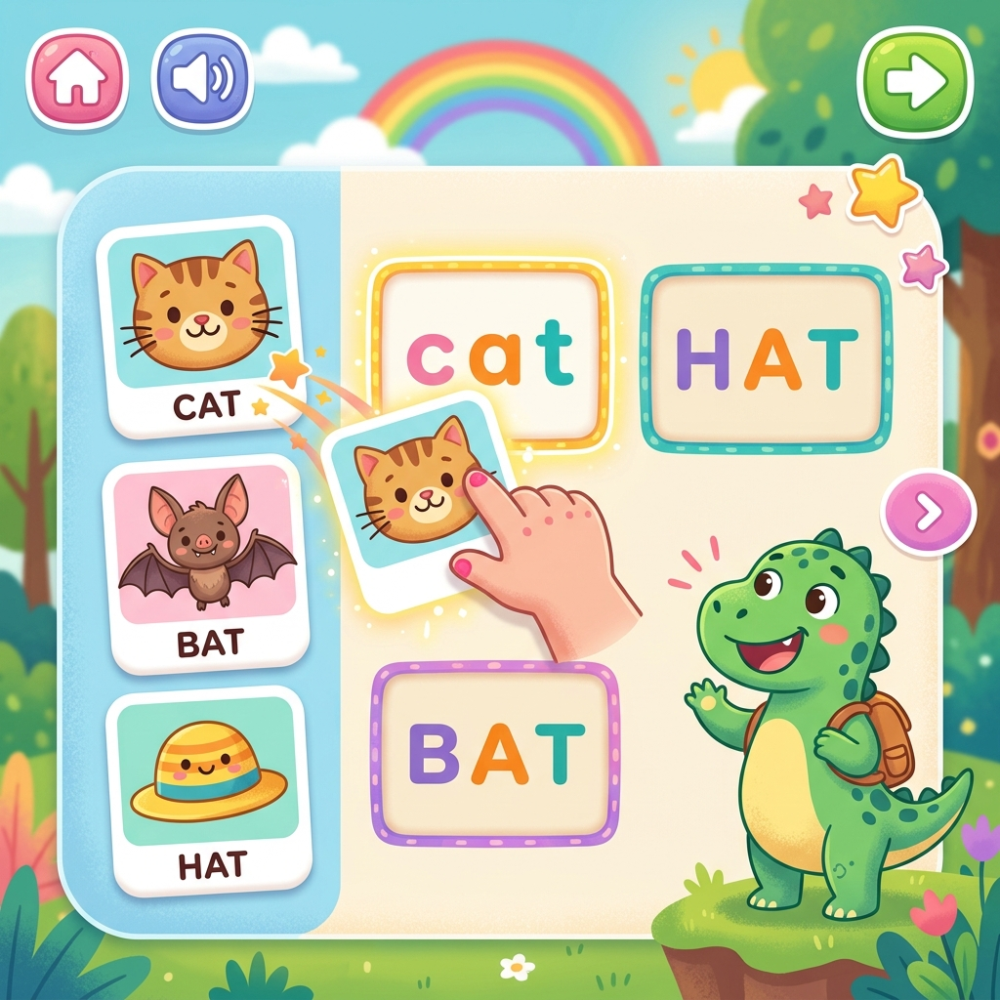
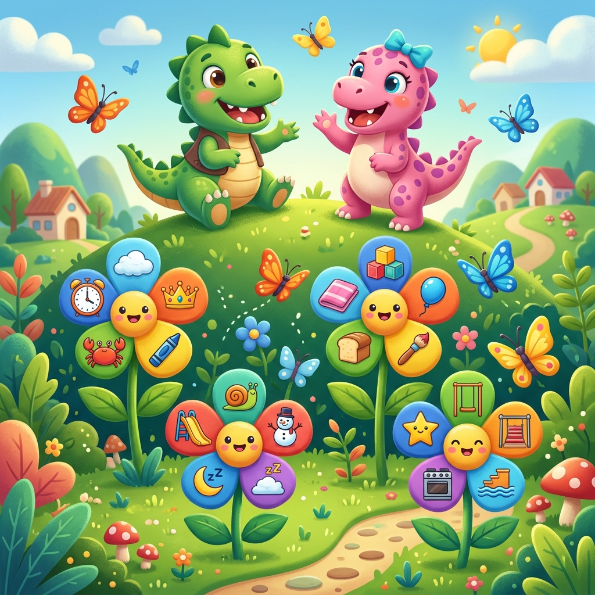

Letters & Sounds
Pop colorful falling bubbles to learn all 26 letter sounds. Weighted letter selection ensures your child practices unfamiliar letters more often. Includes phonics-only, letter-names, or both modes.
GoPhonics transforms phonics learning into an adventure. Your child masters letter sounds, CVC words, consonant blends, sight words & full sentence reading — guided by a friendly dinosaur, completely offline.

A progressive learning journey from single letter sounds to reading full sentences — built on the Science of Reading framework.
Pop colorful falling bubbles to learn all 26 letter sounds. Weighted letter selection ensures your child practices unfamiliar letters more often. Includes phonics-only, letter-names, or both modes.
Master short vowel word families (-at, -an, -ig, -ot, -ub) with picture flashcards and drag-and-drop matching puzzles. Earn mystery sticker rewards every 5 correct matches.
Explore consonant blends (bl, cl, fl, gr, st…) through interactive flower petal games. Then feed the matching dinosaurs in a fun drag-and-drop practice activity.
Embark on a pirate treasure hunt learning long vowel spelling patterns (a_e, ai, ee, igh…). Take quizzes with squishy option bubbles, star streak progress, and particle burst celebrations.
Pop 70 high-frequency sight words in a floating bubble game. Bubbles bounce around the screen — tap them to hear pronunciation, earn gold coins, and build reading fluency.
Tap through 20 interactive sentences word by word. Each word is spoken aloud with a 3D spring animation. Scene illustrations bring every sentence to life with Lottie animations.
A structured, game-based progression from recognizing letters to reading full sentences — all in one app.

Children pop falling letter bubbles while hearing correct phonetic sounds. Adaptive weighting means unfamiliar letters appear more often.

Drag picture cards to matching word cards. Squishy physics-based cards, haptic feedback, and dinosaur egg hatching rewards make practice addictive.

Progress through blends, long vowels, and sight words before reading complete sentences independently. Earn shareable mastery certificates.
Follow our proven, 4-step progressive framework based on the Science of Reading.
Kids start by popping falling letter bubbles. Spoken phonetic audio builds immediate letter-sound connection. Adaptive weighting targets difficult letters.
Children drag squishy picture cards to matching CVC word cards (-at, -an, -ig). Matching three letter sounds builds word decoding skills.
Master complex consonant clusters (bl, cl, st), pirate treasure hunts for silent-e long vowels, and 70 floating sight word bubbles.
Kids tap through 20 illustrated sentences word by word. Audio feedback, 3D animations, and dinosaur egg rewards foster reading independence.
See how GoPhonics stacks up against the top kids reading and phonics apps in features, pricing, and value.
| App | Price | Ages | Offline | Ad-Free | Parental Gate | Phonics Depth | Haptic Feedback |
|---|---|---|---|---|---|---|---|
| 🦕 GoPhonics | Freemium | 3–8 | |||||
| Khan Academy Kids | Free | 2–8 | |||||
| ABCmouse | $14.99/mo | 2–8 | |||||
| HOMER Reading | $12.99/mo | 2–8 | |||||
| Reading Eggs | $9.99/mo | 2–13 | |||||
| Starfall | $5.99/mo | 2–11 | |||||
| Hooked on Phonics | $12.99/mo | 3–8 | |||||
| Endless Alphabet | $7.49 once | 2–8 |
Every design decision is made with child development and parent peace of mind in focus.
All audio, animations, and activities stored locally. Perfect for travel, limited connectivity, or reducing screen-time internet exposure.
Not a simple PIN — parents solve randomized math equations (addition, subtraction, multiplication) to access settings or purchases.
Gold coins, mystery egg cracking, wiggling collectible stickers, and shareable mastery certificates keep children motivated.
Lottie animations, CoreHaptics feedback, squishy card physics, and glassmorphism UI — a tactile, premium experience.
See what families are saying about their GoPhonics experience.
"My 4-year-old went from barely recognizing letters to sounding out CVC words in just three weeks. The dinosaur egg rewards keep her coming back every day!"
"Finally an app that works on long flights! We've used it through 8-hour journeys and my son never gets bored. The offline mode is a lifesaver. Way better than ABCmouse."
"I love the math parental gate — my daughter can't accidentally buy anything. The sticker collection and certificates are brilliant motivation. She proudly shares her certificates!"
GoPhonics is free to download. The free tier includes Letters & Sounds. Upgrade to unlock all 6 learning modules.
Forever free
or $29.99/year (save 50%)
Everything parents want to know about GoPhonics — answered clearly.
GoPhonics is an interactive iOS phonics learning app for children ages 3 to 8. It teaches 6 progressive phonics skills: letter sounds (A-Z), CVC word families (short vowel words like cat, hat, pig), consonant blends (bl, cl, fl, gr), long vowel spelling patterns (a_e, ai, ee, igh), 70 high-frequency sight words, and reading complete sentences. Every lesson uses gamified activities like bubble popping, drag-and-drop puzzles, treasure hunts, and dinosaur feeding games.
GoPhonics is free to download and includes the complete Letters & Sounds module at no cost. The premium subscription ($4.99/month or $29.99/year) unlocks all 6 learning modules. There are no ads, no hidden fees, and no in-app purchases that children can access — all subscription actions are protected behind a math-based parental gate.
Yes! GoPhonics works 100% offline. All learning content — audio pronunciations, animations, game mechanics, and rewards — is stored locally on your device. No internet is ever needed to play. This makes GoPhonics ideal for travel, areas with limited connectivity, and parents who want to minimize their child's internet exposure.
Absolutely. GoPhonics is designed with child safety as the top priority. It contains zero ads, no social features, no external links, and no data collection from children (COPPA compliant). The app uses a unique math-based parental gate — parents must solve randomized arithmetic problems (addition, subtraction, multiplication) to access settings, share features, or manage subscriptions. This is significantly harder for children to bypass compared to standard PIN locks or "hold for 3 seconds" gates used by competitors.
GoPhonics differentiates itself in several key areas: (1) Full offline functionality — unlike ABCmouse and HOMER which require internet, GoPhonics runs entirely offline. (2) Premium tactile experience — real-time CoreHaptics feedback, squishy physics-based card dragging, and Lottie celebration animations make the experience uniquely satisfying. (3) Stricter parental controls — a math-equation gate is harder for kids to bypass than simple PINs. (4) More affordable — at $4.99/month vs. ABCmouse ($14.99/month) or HOMER ($12.99/month), GoPhonics delivers deep phonics instruction at a fraction of the cost. (5) Focused phonics expertise — while Khan Academy Kids is broad, GoPhonics goes deep on the Science of Reading phonics progression.
GoPhonics is available on iPhone and iPad running iOS 15.0 or later. The app is optimized for both landscape orientations on iPad (4:3 aspect ratio) and iPhone (19.5:9 aspect ratio) with adaptive layouts that scale perfectly across all screen sizes.
Yes, you can cancel your GoPhonics subscription at any time through your Apple App Store settings. There are no cancellation fees, no lengthy processes, and no dark patterns. After cancellation, you retain access until the end of your current billing period. The free Letters & Sounds module remains available forever.
Download GoPhonics free today. No credit card required. Your child will be reading in weeks.
Tap any letter below to see synthetic phonics mouth movements and word blending in action!